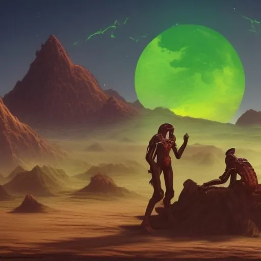

"Niraxus: A New Hope"
Chapter 3: "The Ship's AI: Nova"

As the Nebula Explorer orbited around Earth's moon, the crew discussed the possibility of encountering alien civilizations on their journey to the new planet. The ship's science officer, Dr. Ahmed Ali, was in charge of monitoring for any signs of alien civilizations and analyzing any data that was collected.
Dr. Ali was a young, ambitious scientist of Egyptian descent. He had a passion for astrobiology and had devoted his career to the study of extraterrestrial civilizations. He was a valuable member of the crew and was respected by the captain and the other officers.
As the ship traveled around the moon, Dr. Ali was on the bridge, discussing the potential for alien civilizations with Captain Patel.
"Captain, I've been reviewing the data on known alien civilizations that have made contact with humans," Dr. Ali said. "Nova, can you show me the log of known alien civilizations that we have encountered so far?"
"Of course, Dr. Ali," Nova's voice replied. "Including their traits, characteristics, star system, GPS coordinates, physical appearance, biological anatomy, diplomacy towards humans and behavior."
A log appeared on the screen in front of Dr. Ali, listing all the alien civilizations that humans have encountered so far:
»Zorax: Advanced technology, peaceful, Star system: Zorax-alpha, GPS Coordinates: -45.0N, 90.0W, Physical appearance: Humanoid, three fingers, blue skin, Biological anatomy: Carbon-based, oxygen-breathing, Diplomacy towards humans: Open and cooperative, Behavior: Non-aggressive
»Valtor: Agricultural skills, peaceful, Star system: Valtor-beta, GPS Coordinates: 45.0S, 90.0E, Physical appearance: Quadrupedal, green fur, Biological anatomy: Silicone-based, water-breathing, Diplomacy towards humans: Open and cooperative, Behavior: Non-aggressive
»Kaltor: Aggressive behavior, Star system: Kaltor-gamma, GPS Coordinates: 0.0N, 0.0E, Physical appearance: Insectoid, multi-limbed, purple exoskeleton, Diplomacy towards humans: Hostile, Behavior: Aggressive
»Xantor: Highly intelligent, Star system: Xantor-delta, GPS Coordinates: 45.0N, 0.0E, Physical appearance: Humanoid, large eyes, white hair, Biological anatomy: Carbon-based, oxygen-breathing, Diplomacy towards humans: Open and cooperative, Behavior: Non-aggressive
»Altor: Advanced technology, Star system: Altor-epsilon, GPS Coordinates: - -45.0S, 0.0W, Physical appearance: Reptilian, four limbs, green scales, Biological anatomy: Carbon-based, oxygen-breathing, Diplomacy towards humans: Neutral, Behavior: Non-aggressive
»Galtor: Warlike, Star system: Galtor-zeta, GPS Coordinates: 0.0S, 90.0W, Physical appearance: Avian, wings, red feathers, Biological anatomy: Carbon-based, oxygen-breathing, Diplomacy towards humans: Hostile, Behavior: Aggressive
»Faltor: Agricultural skills, Star system: Faltor-eta, GPS Coordinates: 45.0N, 90.0W, Physical appearance: Humanoid, elongated head, orange skin, Biological anatomy: Carbon-based, oxygen-breathing, Diplomacy towards humans: Open and cooperative, Behavior: Non-aggressive
»Haltor: Highly advanced civilization, Star system: Haltor-theta, GPS Coordinates: -45.0S, 90.0E, Physical appearance: Humanoid, elongated head, orange skin, Biological anatomy: Carbon-based, oxygen-breathing, Diplomacy towards humans: Open and cooperative, Behavior: Non-aggressive
»Jaltor: Highly spiritual, Star system: Jaltor-iota, GPS Coordinates: 0.0N, 45.0E, Physical appearance: Humanoid, elongated ears, green skin, Biological anatomy: Carbon-based, oxygen-breathing, Diplomacy towards humans: Open and cooperative, Behavior: Non-aggressive
»Kaltor: Advanced technology, Star system: Kaltor-kappa, GPS Coordinates: 45.0S, 45.0W, Physical appearance: Humanoid, elongated head, orange skin, Biological anatomy: Carbon-based, oxygen-breathing, Diplomacy towards humans: Open and cooperative, Behavior: Non-aggressive
As Dr. Ali scanned through the list, the other officers on the bridge also took a closer look.
"Captain, have you ever heard of the Jaltor civilization?" Dr. Ali asked.
"Yes, I have," Captain Patel replied. "They are a highly spiritual civilization with advanced agricultural skills. They have open and cooperative diplomacy towards humans, and a non-aggressive behavior."
"Exactly," Dr. Ali said. "I've been studying their culture and they have a strong tradition of trading with other civilizations. They have a particularly good relationship with humans and we have been trading with them for many years."
"What do we trade with them?" Captain Patel asked.
"We trade mostly agricultural products and minerals with them," Dr. Ali replied. "But their favourite trade item is a rare spice that they use in their traditional cooking. They also make a special type of coffee that is highly sought after by humans. And I know you have a particular fondness for the alcohol that they produce."
"Yes, I do," Captain Patel said. "It's a unique blend of their traditional spices and has a smooth, rich flavor. I always make sure to stock up on it whenever we make a trade with them."
The bridge crew continued their discussion, carefully studying the data on the log and making preparations for any potential encounters with alien civilizations. They were excited to explore the unknown and make new discoveries, and they knew that the Jaltor civilization would be a valuable ally on their journey.
"It's important that we study these civilizations and their traits before making contact with any alien species on our journey," said Captain Patel. "We need to be prepared for any potential hostile behavior, and also to understand the diplomatic relations we may have with these civilizations."
"Agreed," said Dr. Ali. "I suggest we also gather more information on any unknown alien civilizations we may encounter on our journey. It's better to be safe than sorry."
"I agree," said the navigation officer. "We need to be aware of all potential dangers on our journey."
The bridge crew continued their discussion, carefully studying the data on the log and making preparations for any potential encounters with alien civilizations.